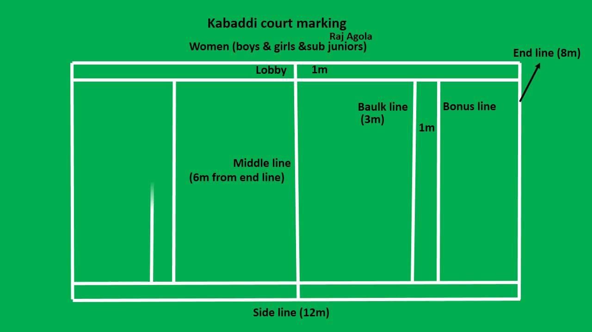
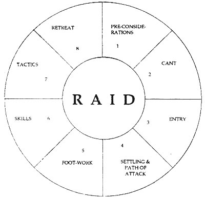

Kabaddi is a contact team sport that originated in Tamilnadu. It is the national sport of Bangladesh. It is also popular in South Asia and is the state game of the Indian states of Tamil Nadu, Kerala, Andhra Pradesh, Bihar, Haryana, Karnataka, Maharashtra, Punjab and Telangana.
Kabaddi is played between two teams of seven players; the object of the game is for a single player on offence—referred to as a "raider"—to run into the opposing team's half of a court, tag out as many of their defenders as possible, and return to their own half of the court—all without being tackled by the defenders.
Objective
Kabaddi is played outdoors on a ground. The objective of the game is that a team should score points than the opponent team. It is all about attempting to score more oints, while restricting the score and dismissing the batsmen of the opponent team.
Team Size
In kabaddi, each playing side has 07 players and one of them is appointed as captain. Apart from these 07 players, there are a few more players on each side who can only field as substitute for an injured team member.
Kabaddi Field Dimensions
The play ground of the Kabaddi shall be level and soft preferably made of earth, manure and sawdust. The ground shall be 121/2 meters X 10 meters. For women and Juniors the measurement shall be 11metres X 8 meters. The mid line drawn divides the play ground into two courts. There shall be strip of one meter wide on each side of the playfield, which is called Lobby. In each half, at a distance of about 3 meters from the mid-line and parallel to it lines of the full width of ground shall be drawn. These are Baulk lines.


Asian Countries Participating in Kabaddi
In earlier World Cups, it was observed that players of Indian origin represented several countries. Among major countries which are participating are Afghanistan, Argentina, Canada, Denmark, England, Iran, Italy, Kenya, New Zealand, Norway, Pakistan, Scotland, Sierra Leon
Dimensions of Kabaddi Equipment
The ground shall be 121/2 meters X 10 meters. For women and Juniors the measurement shall be 11metres X 8 meters. The mid line drawn divides the play ground into two courts.